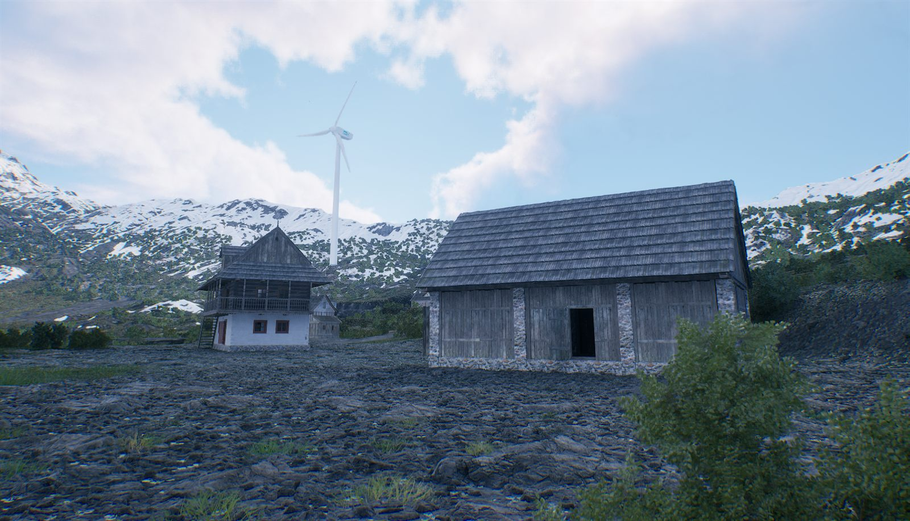
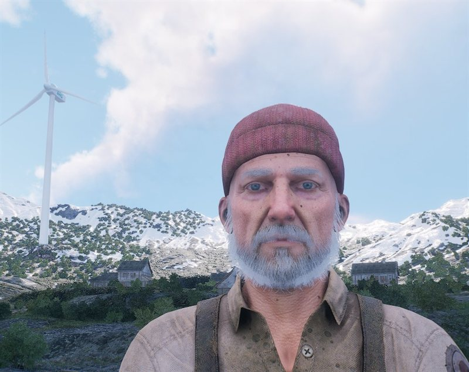
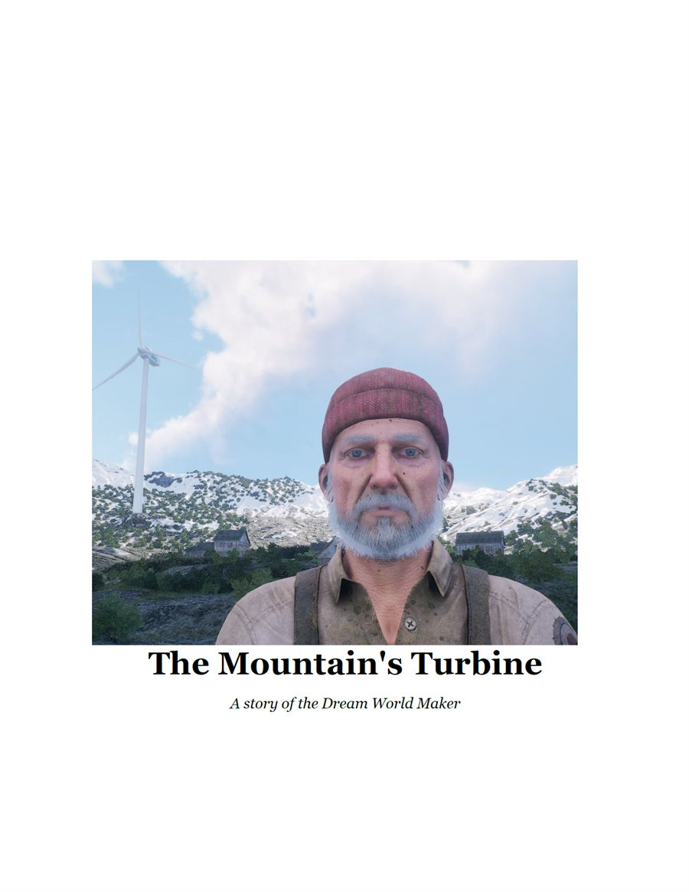
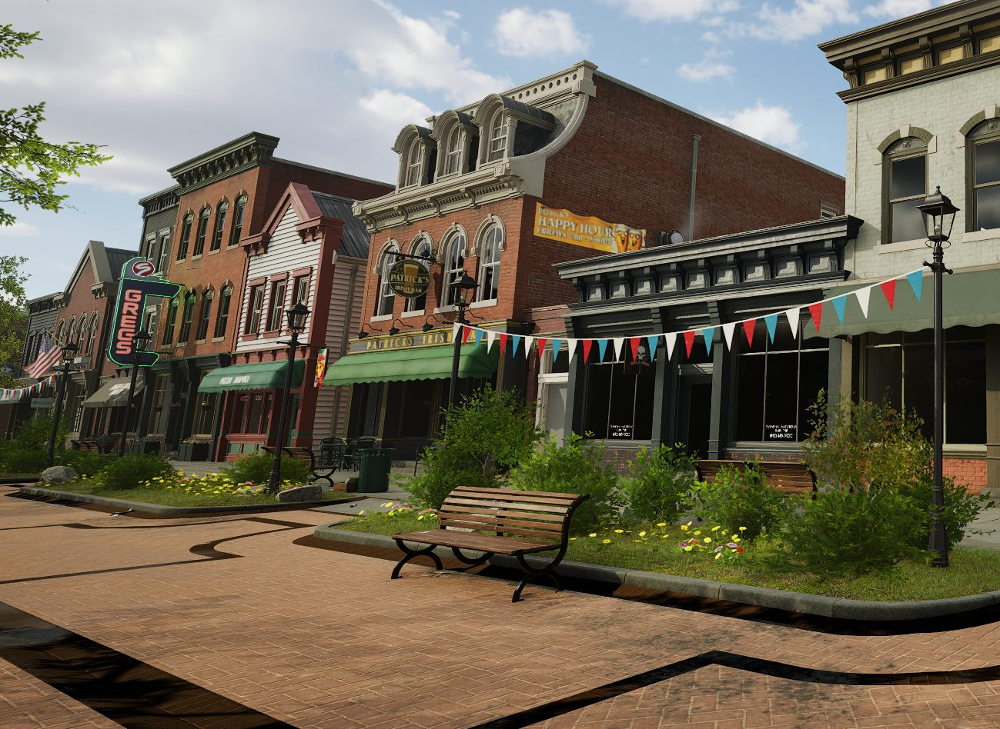
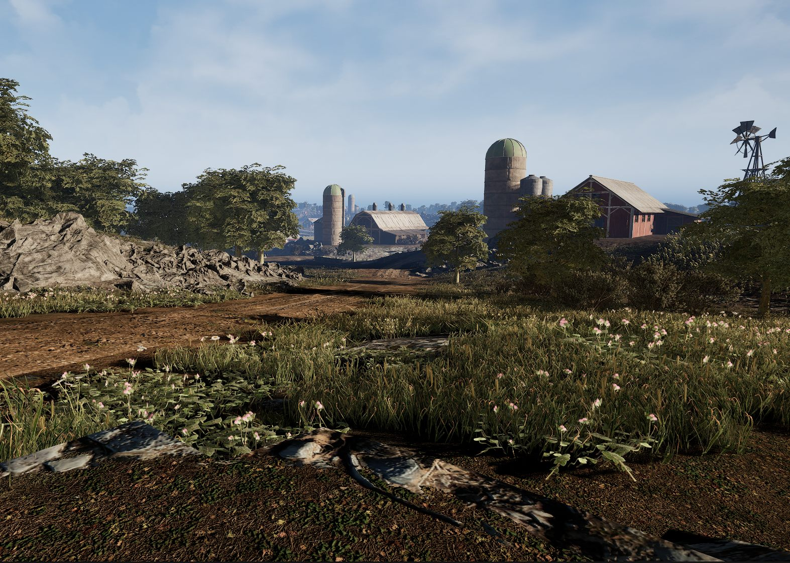
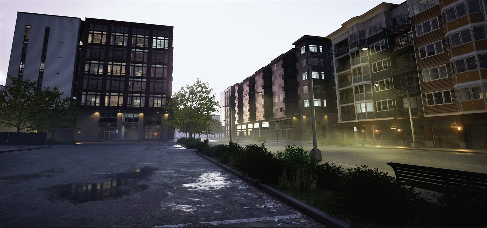
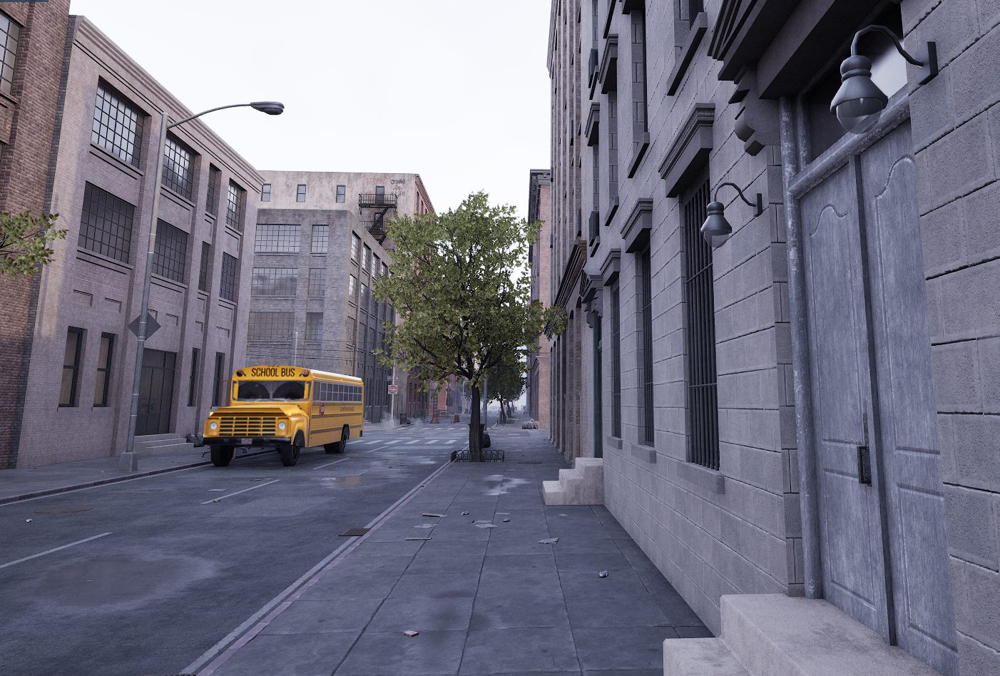
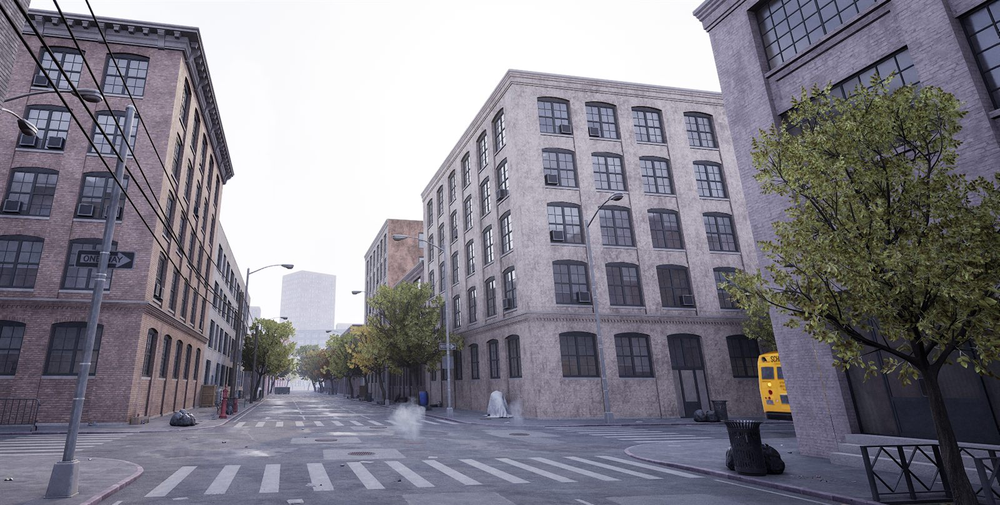

Mountain
Alpine ridgeline
Wind, stone, and height. The turbine stands here — and so does almost nothing else it needs.

Dream World Maker
Five communities, one real economy, and a machine that only gets fixed if everyone does their part.

Mountain Community
We're building a world where no single community can solve its problems alone.
Hank Murphy
The Demo Story
One journey through all five communities to bring an old wind turbine back to life.
The mountain has the wind and the tower. It doesn't have the drawings, the grain to feed the crew, the salvage, or the machine shop to cut a new gearbox. Every one of those lives somewhere else — and every trade to get them is settled on a ledger that doesn't forgive and doesn't pretend.

The World
Each produces something the others need, and needs something it cannot make. That isn't a difficulty setting. It's the map.
Alpine ridgeline
Wind, stone, and height. The turbine stands here — and so does almost nothing else it needs.

Engineering workshops
Behind the storefronts on the main street: the drawing offices. If it gets designed, it gets designed here.

Farmland
Grain, silos, and the long memory that comes with feeding everyone else. Debts here are remembered.

Recycling yards
Density, logistics, and salvage. What the others throw away arrives here and leaves as material.

Factories
Machine shops and manufacturing capacity. The only place a part can actually be cut.
The Stone Ledger
Every trade moves on an actual mutual-credit system. Stones aren't drawn from a pool that somebody topped up — they're minted at the moment of exchange, exactly as many as the trade needs.
The buyer goes negative. The seller goes positive. The network always sums to zero.
A negative balance is not a failure state, and the game never treats it as one. It means a community has taken more than it has given so far — which is the ordinary condition of anyone who specialises in something. Run a vault dry, though, and that is a different matter entirely.
Underneath
Dream World Maker is built on a real systems-engineering toolchain. The machine in the world was taken through all of it before it ever appeared on screen.
Stage 01
Mission and requirements captured as SysML models, organised around use cases.
Stage 02
Geometry and assemblies built as real CAD, exported as STEP.
Stage 03
A Simulink engineering model run across scenarios, producing channel data.
Stage 04
Pass/fail checks against the requirements. Nothing reaches the world unverified.
Said plainly: the turbine's simulation data is genuine model output, run and verified before being packaged into the world. The rotor you see turning in the vertical slice is animated by the asset itself — it is not being driven live by the model. Those are two different claims and we only make the first one.

Start here
A short story of the demo adventure, sent straight to you — and the first word when the world opens.